Gallery · 110 pieces
Spiritual, Mandala & Symbolic
Mandalas, chakras and symbolic work.
Mandalas, chakra designs and symbolic work, built from repeating pattern and colour.
There are 110 pieces here. Most are horizontal. The colours that come up most are blue, white and red. They suit rooms like the entry & hallway, the home office and the living room. Narrow them by colour and shape below, and see any of them on a wall at its real size.
Chakras Abstract Spiritual Art 32 pieces
 Blue Marble Lotus, Black Line Mandala
Blue Marble Lotus, Black Line Mandala Blue Vishuddha, Throat Chakra Symbol
Blue Vishuddha, Throat Chakra Symbol Cobalt Lattice - Flower of Life Oval
Cobalt Lattice - Flower of Life Oval Crimson Totem in a Navy Oval
Crimson Totem in a Navy Oval Cutout of Color: Om Third Eye Symbol in Teal and Blue
Cutout of Color: Om Third Eye Symbol in Teal and Blue Electric Lotus, Blue and White Mandala
Electric Lotus, Blue and White Mandala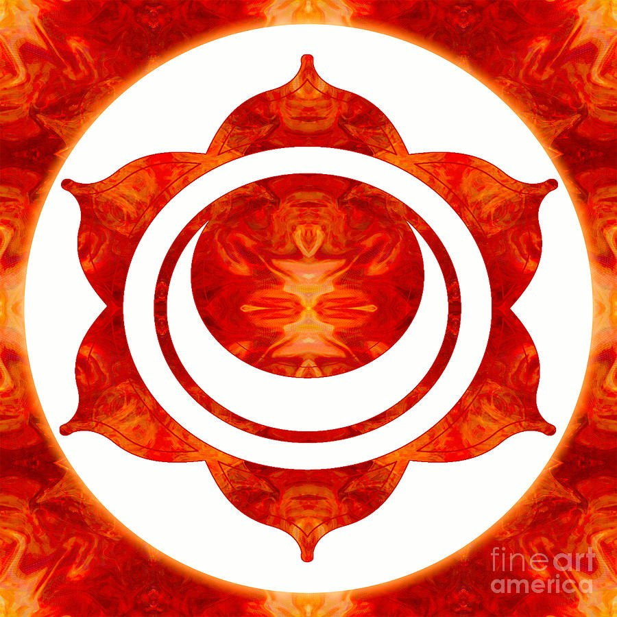
Ember Lotus - Red and Orange Mandala Ember Lotus Mandala in Red and Orange
Ember Lotus Mandala in Red and Orange Ember Lotus: Golden Orange MandalaEmber Seal, Red Petal Emblem
Ember Lotus: Golden Orange MandalaEmber Seal, Red Petal Emblem Emerald Lotus, Marbled Green Chakra Emblem
Emerald Lotus, Marbled Green Chakra Emblem Golden Lantern, Solar Plexus Chakra Symbol
Golden Lantern, Solar Plexus Chakra Symbol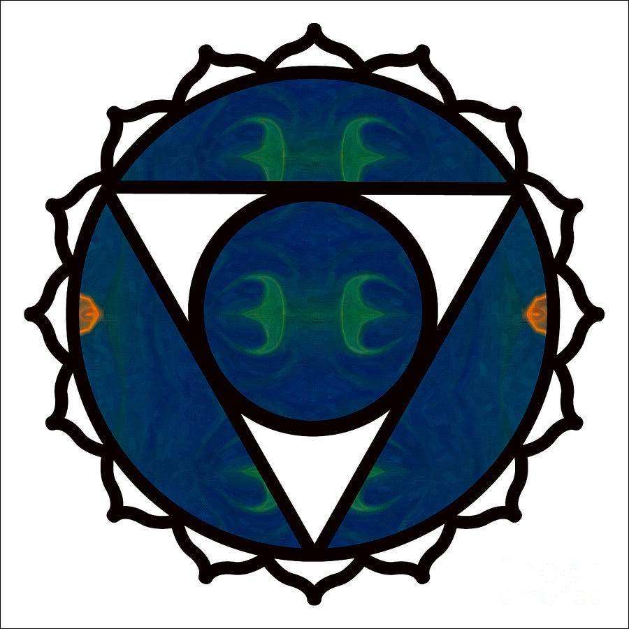
Green Crescent Mandala in Deep Blue Green Lotus Star, Sacred Geometry Emblem
Green Lotus Star, Sacred Geometry Emblem Held Breath, Blue Archer in White Oval
Held Breath, Blue Archer in White Oval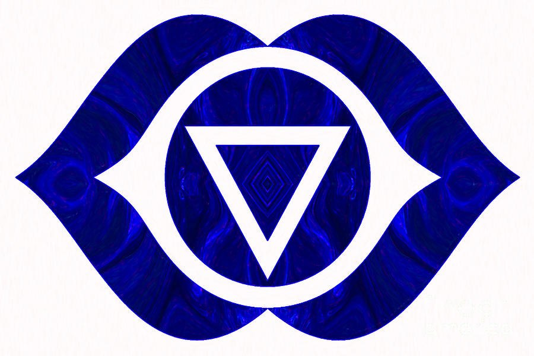
Indigo Eye, White Triangle on Marbled Blue Indigo Moon: Navy Star Mandala on White
Indigo Moon: Navy Star Mandala on White Indigo Om, Marbled Lotus Mandala
Indigo Om, Marbled Lotus Mandala Indigo Turning - Purple Star Mandala on White
Indigo Turning - Purple Star Mandala on White Indigo Wings, Third Eye Symbol
Indigo Wings, Third Eye Symbol Lotus Star, Green Mandala on White
Lotus Star, Green Mandala on White Rainbow Ladder, Seven Framed Symbols
Rainbow Ladder, Seven Framed Symbols Rising Seven - Seven Chakra Symbols in a Rainbow Column
Rising Seven - Seven Chakra Symbols in a Rainbow Column Rooted in Red, Triangle Emblem on a White Disc
Rooted in Red, Triangle Emblem on a White Disc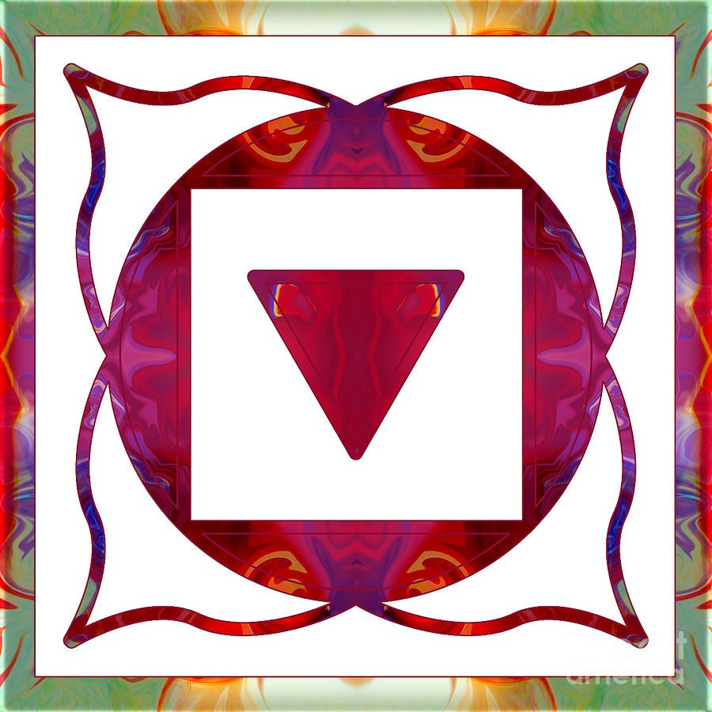
Ruby Emblem, Red Triangle in a Magenta Circle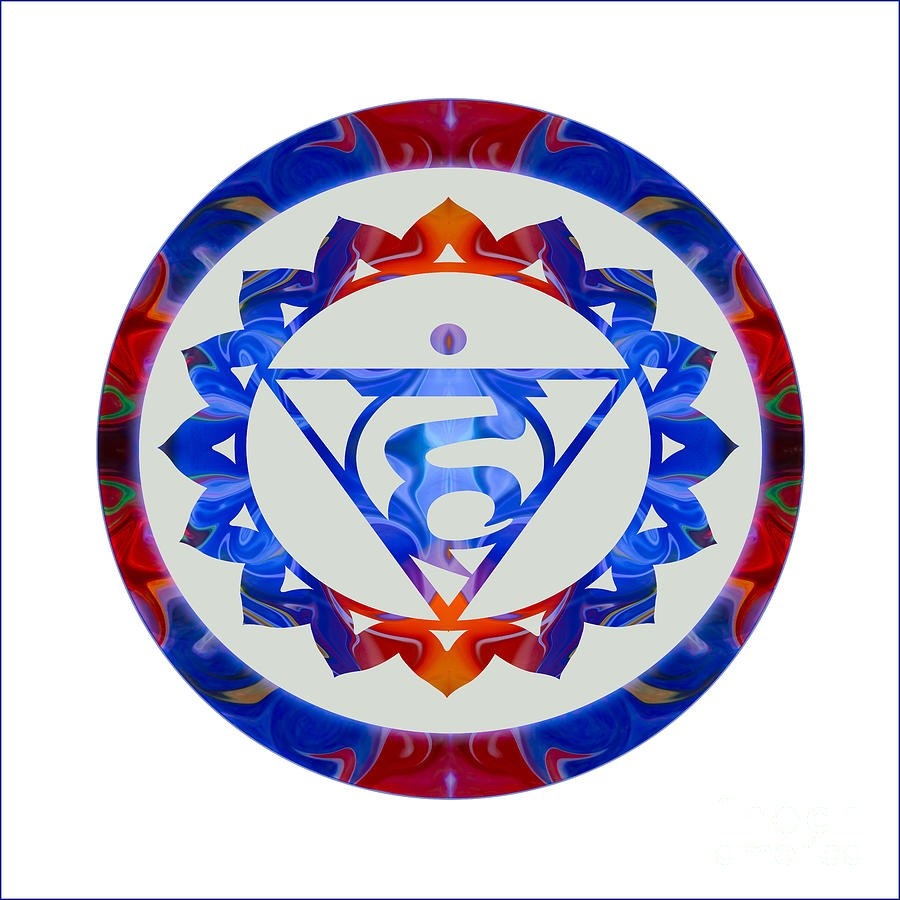
Sixteen Petals, Blue and Red Lotus Mandala Sixteen Petals, Blue Marbled Mandala
Sixteen Petals, Blue Marbled Mandala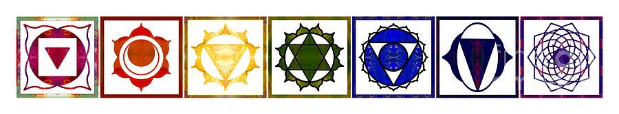
Spectrum Walk, Seven Chakra Symbols Still Point: Blue Triangle Symbol in a White Circle
Still Point: Blue Triangle Symbol in a White Circle Sunlit Emblem, Golden Triangle and Petal Ring
Sunlit Emblem, Golden Triangle and Petal Ring Sunlit Triangle - Golden Petal Mandala
Sunlit Triangle - Golden Petal Mandala The Open Circle, Red and Violet Star Mandala
The Open Circle, Red and Violet Star MandalaAstrology Abstract Symbols and Icons 12 pieces
 Aquarius Double Wave in Blue
Aquarius Double Wave in Blue Aries in Gold - Ram's Horn Symbol in a White Oval
Aries in Gold - Ram's Horn Symbol in a White Oval Cancer in Crimson: Zodiac Glyph in a White Oval
Cancer in Crimson: Zodiac Glyph in a White Oval Capricorn in Blue - Zodiac Glyph in a White Oval
Capricorn in Blue - Zodiac Glyph in a White Oval Gemini Ember - Red Zodiac Symbol in a White Oval
Gemini Ember - Red Zodiac Symbol in a White Oval Leo Aflame, Orange Zodiac Glyph
Leo Aflame, Orange Zodiac Glyph Midnight Om Lotus Mandala
Midnight Om Lotus Mandala Pisces Glow - Green Zodiac Symbol
Pisces Glow - Green Zodiac Symbol Rising Glyph - Blue Symbol in a White Oval
Rising Glyph - Blue Symbol in a White Oval Scorpio in Blue, Zodiac Glyph in a White OvalTaurus Ember Window, Orange Zodiac Glyph
Scorpio in Blue, Zodiac Glyph in a White OvalTaurus Ember Window, Orange Zodiac Glyph Virgo in Gold, Zodiac Symbol in a White Oval
Virgo in Gold, Zodiac Symbol in a White OvalMore Spiritual, Mandala & Symbolic 66 pieces
 Angel in the Marble - Mirrored Amber Wings
Angel in the Marble - Mirrored Amber Wings Be Badass Everyday, Pink Braided Border QuoteBetter to Speak, Quote on a Garden StoneCobalt Crest, Kaleidoscope Abstract in Blue and Crimson
Be Badass Everyday, Pink Braided Border QuoteBetter to Speak, Quote on a Garden StoneCobalt Crest, Kaleidoscope Abstract in Blue and Crimson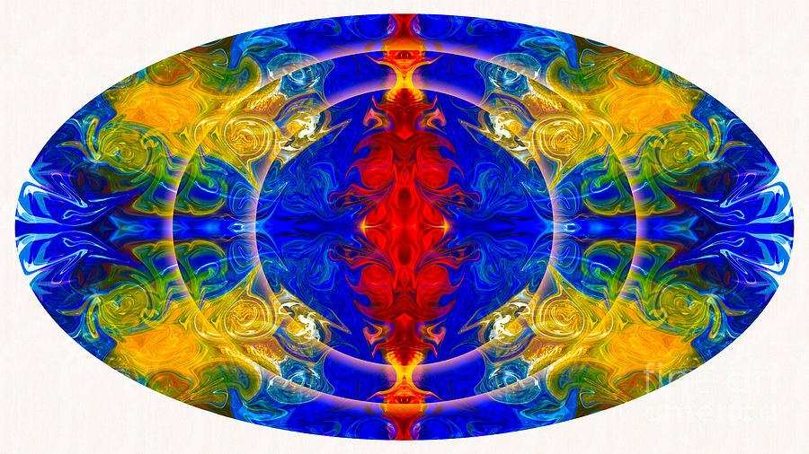
Cobalt Ember, Mirrored Red Flame AbstractCobalt Flame, Blue and Gold MandalaCobalt Wings, Kaleidoscope Abstract Crimson Ascent, Red Dragon Silhouette
Crimson Ascent, Red Dragon Silhouette Diamond Glow, Magenta and Gold Kaleidoscope
Diamond Glow, Magenta and Gold Kaleidoscope Ember Bloom Kaleidoscope in Orange and Pink
Ember Bloom Kaleidoscope in Orange and Pink Ember Bloom, Orange and Red Marbled Flower
Ember Bloom, Orange and Red Marbled Flower Ember Bloom, Symmetrical Abstract in Orange and Green
Ember Bloom, Symmetrical Abstract in Orange and Green Ember Eclipse, Symmetrical Orange and Black Abstract
Ember Eclipse, Symmetrical Orange and Black Abstract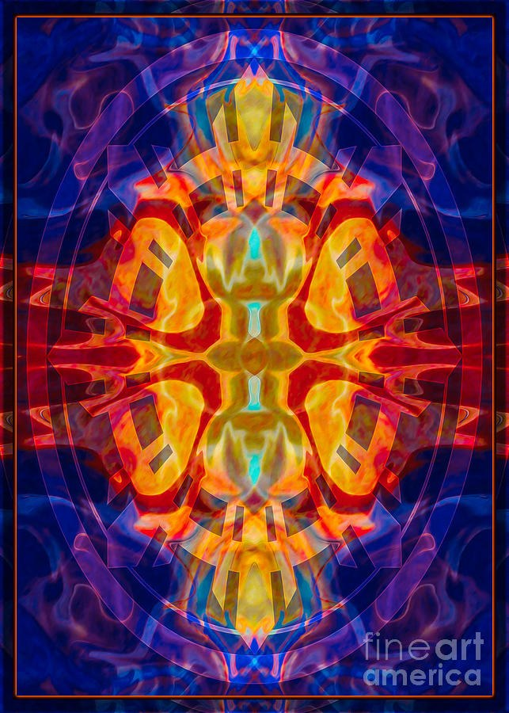
Ember Emblem - Symmetrical Orange and Navy Abstract Ember Glow, Mirrored Swirls in Blue and OrangeEmber Glyph, Orange and Red Marbled Emblem
Ember Glow, Mirrored Swirls in Blue and OrangeEmber Glyph, Orange and Red Marbled Emblem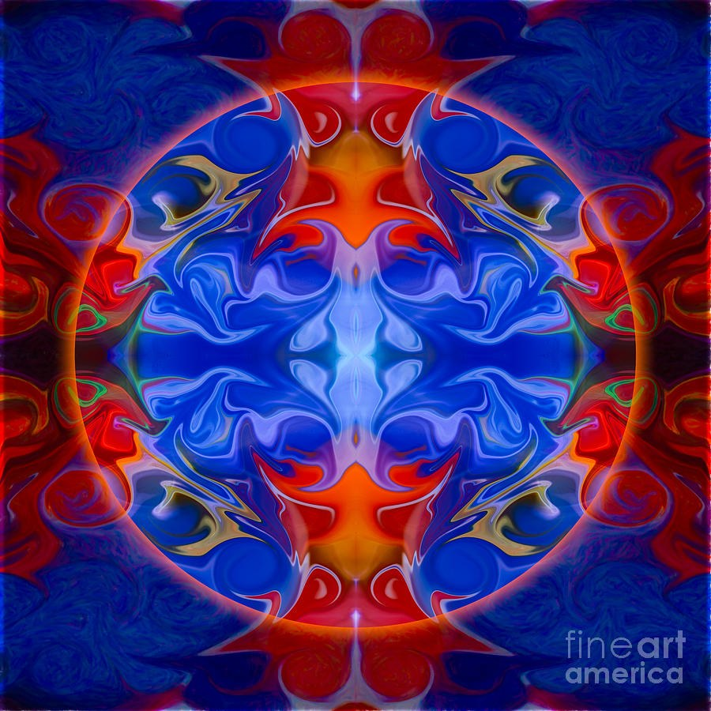
Ember Halo - Symmetrical Blue Orb Abstract Ember Heart - Mirrored Red Abstract
Ember Heart - Mirrored Red Abstract Ember Heart - Mirrored Red and Green Abstract
Ember Heart - Mirrored Red and Green Abstract Ember Heart in a Leaf Wreath
Ember Heart in a Leaf Wreath Ember Lantern, Mirrored Red and Orange AbstractEmber Lotus, Marbled Orange Symbol on WhiteEmber Mask, Red Tribal Creature on White
Ember Lantern, Mirrored Red and Orange AbstractEmber Lotus, Marbled Orange Symbol on WhiteEmber Mask, Red Tribal Creature on White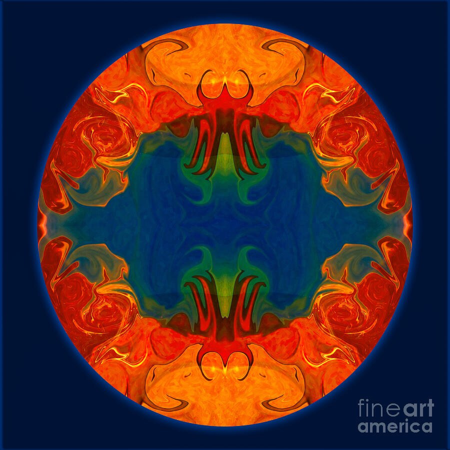
Ember Mirror: Orange and Teal Mandala on Navy Ember Oval, Mirrored Ribbon Abstract
Ember Oval, Mirrored Ribbon Abstract Ember Star - Mirrored Red and Orange Medallion on Blue
Ember Star - Mirrored Red and Orange Medallion on Blue Ember Star - Symmetrical Kaleidoscope AbstractEmber Sting, Red Tribal ScorpionEmber Totem: Mirrored Abstract in Cobalt and Amber
Ember Star - Symmetrical Kaleidoscope AbstractEmber Sting, Red Tribal ScorpionEmber Totem: Mirrored Abstract in Cobalt and Amber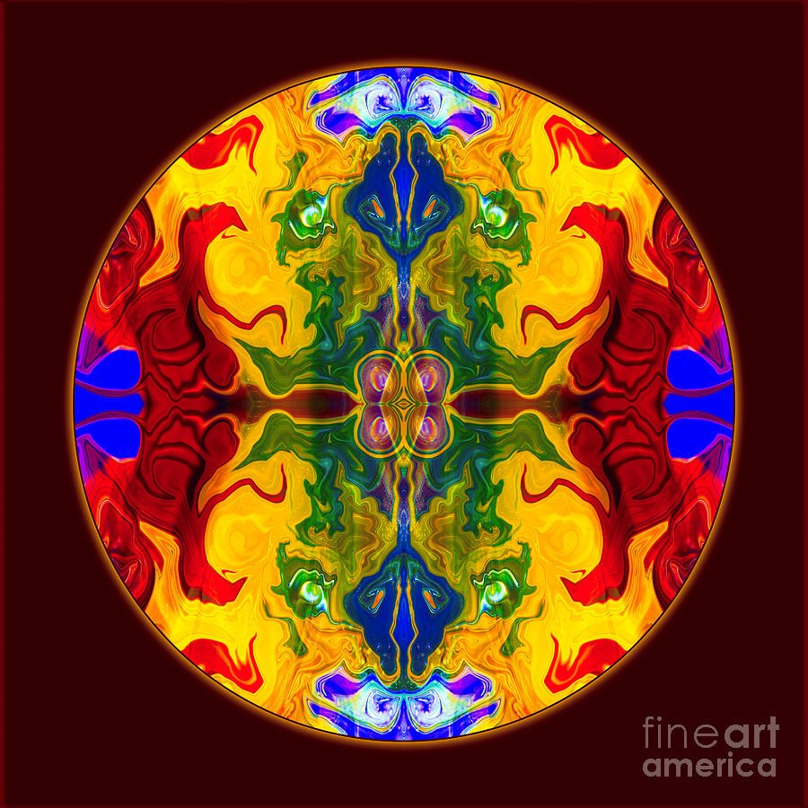
Ember Totem: Mirrored Mandala on Dark Maroon Ember Window - Kaleidoscope Mandala in Blue and Orange
Ember Window - Kaleidoscope Mandala in Blue and Orange Ember Window: Red and Yellow Kaleidoscope Scrolls
Ember Window: Red and Yellow Kaleidoscope Scrolls Ember Wings, Red and Blue Kaleidoscope
Ember Wings, Red and Blue Kaleidoscope Ethan's Anchor, Red Name Art
Ethan's Anchor, Red Name Art Golden Halo, Mirrored Kaleidoscope Abstract
Golden Halo, Mirrored Kaleidoscope Abstract Grace - Green and Gold Mirrored Abstract on Navy
Grace - Green and Gold Mirrored Abstract on Navy Heart Medallion, Kaleidoscope Heart on Pale Blue
Heart Medallion, Kaleidoscope Heart on Pale Blue Heart Wheel - Blue and Yellow Heart Mandala
Heart Wheel - Blue and Yellow Heart Mandala Indigo Portal: A Jewel-Toned Yin Yang
Indigo Portal: A Jewel-Toned Yin Yang Indigo Veil Yin YangInspire Medallion in Teal and Brown
Indigo Veil Yin YangInspire Medallion in Teal and Brown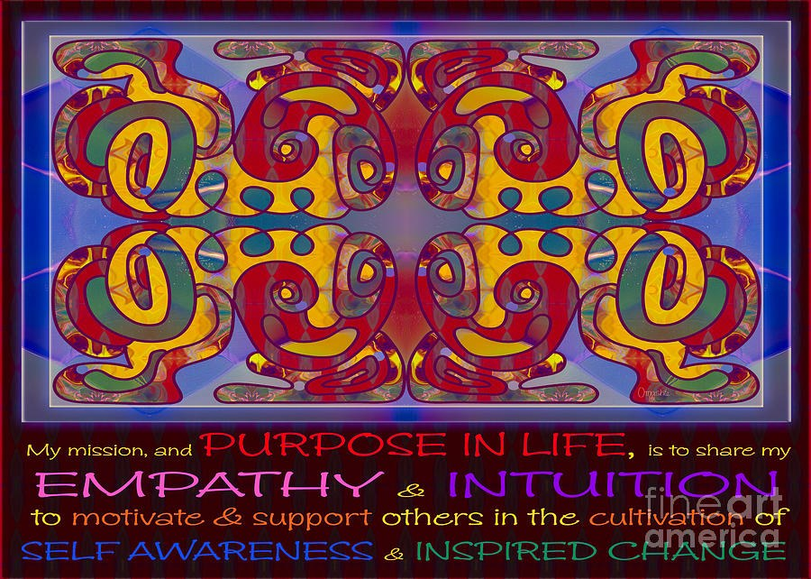
Inspired Change - Mirrored Spiral Abstract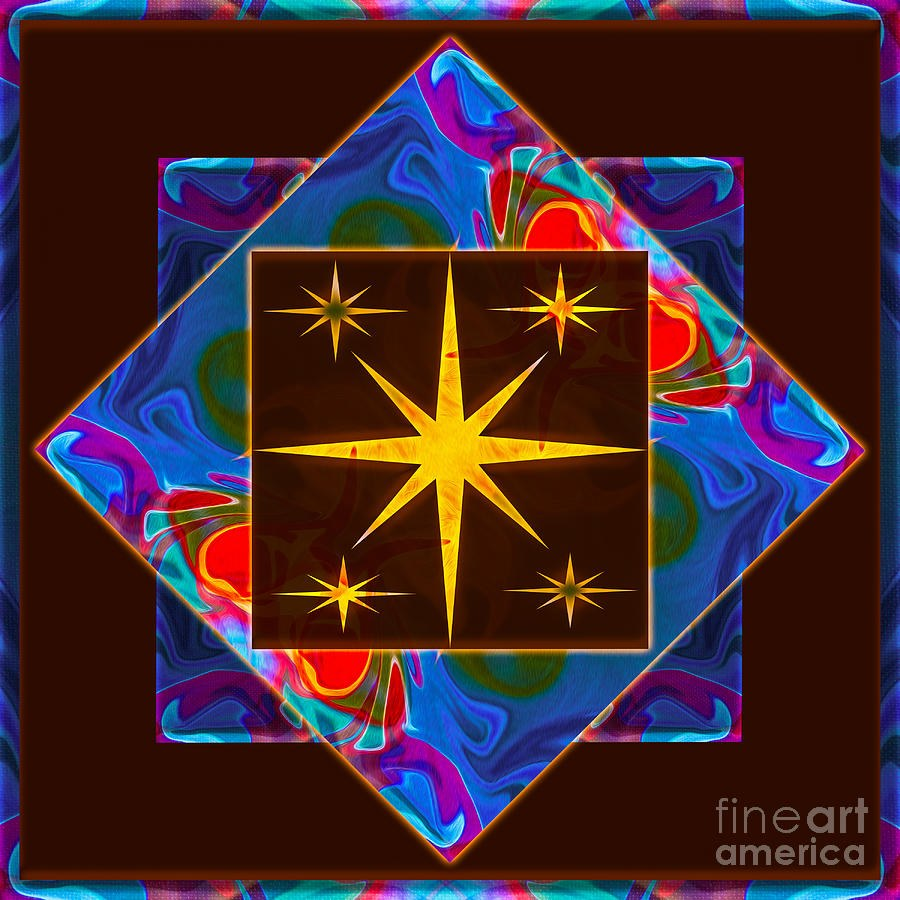
Jewel Box Star, Golden Star on a Blue Diamond Jewel Portal, Symmetrical Abstract on Maroon
Jewel Portal, Symmetrical Abstract on Maroon Jeweled Emblem, Mirrored Blue Swirl Oval
Jeweled Emblem, Mirrored Blue Swirl Oval Lantern Heart, Mirrored Red and Green Abstract
Lantern Heart, Mirrored Red and Green Abstract Mary, Pink Heart with Scrollwork
Mary, Pink Heart with Scrollwork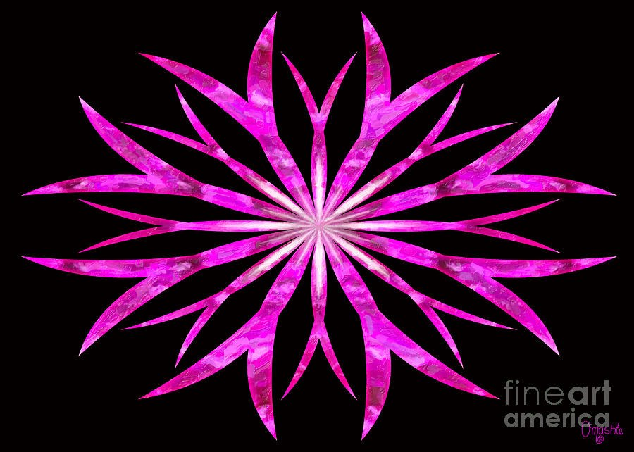
Nova Bloom, Magenta Starburst on BlackPeace in Smoke - Black Peace Symbol on Red Self-Awareness: Glowing Turquoise and Pink Oval
Self-Awareness: Glowing Turquoise and Pink Oval Small Crown: Stone Cairn with Red Seed PodSolar Ember: Twelve-Rayed Sun Emblem
Small Crown: Stone Cairn with Red Seed PodSolar Ember: Twelve-Rayed Sun Emblem Star Eye, Mirrored Abstract in Red and Teal
Star Eye, Mirrored Abstract in Red and Teal Sunset Oval - Gandhi Quote in Mirrored Red Ribbons
Sunset Oval - Gandhi Quote in Mirrored Red Ribbons The Eye of One Who Sees, Turquoise Script Quote
The Eye of One Who Sees, Turquoise Script Quote The Indigo Pool: Mirrored Gold Spiral Abstract
The Indigo Pool: Mirrored Gold Spiral Abstract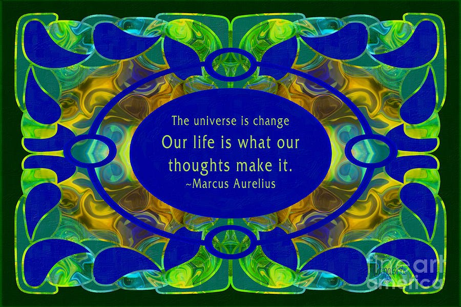
The Universe Is Change, Blue Oval Quote in Green and GoldTransformation, Red Flowers Around a Teal Cross Turquoise Crossing, Mirrored Abstract
Turquoise Crossing, Mirrored Abstract Twelve Flames, Red Mandala Sun on Dark Green
Twelve Flames, Red Mandala Sun on Dark Green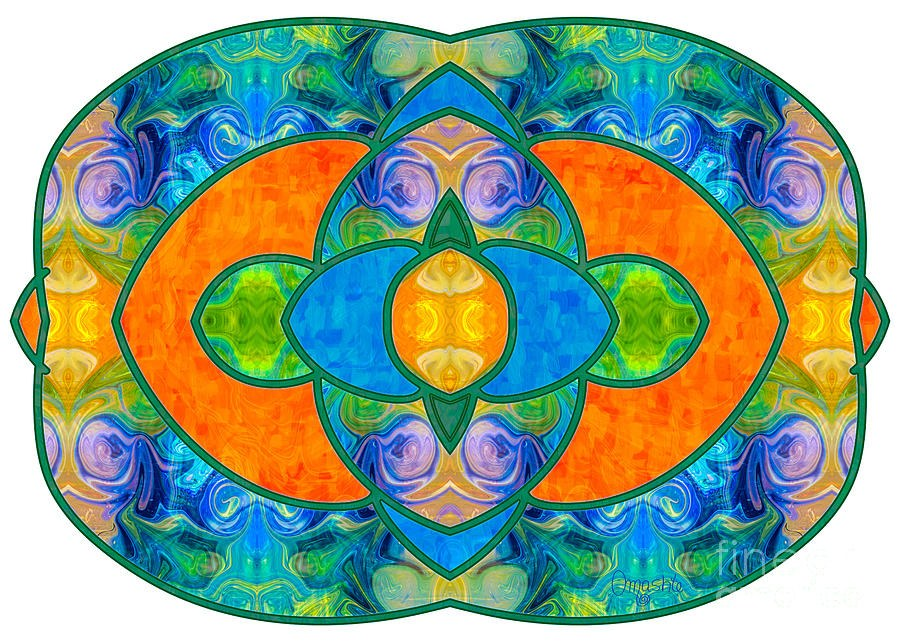
Twin Crescents, Orange and Blue Mandala Twin Suns Atom - Mirrored Flame Abstract
Twin Suns Atom - Mirrored Flame Abstract Unfurling Pink Kaleidoscope Oval
Unfurling Pink Kaleidoscope Oval Veils Above, Painterly Clouds Over EvergreensViolet Night Sun, Purple Mandala on Black
Veils Above, Painterly Clouds Over EvergreensViolet Night Sun, Purple Mandala on Black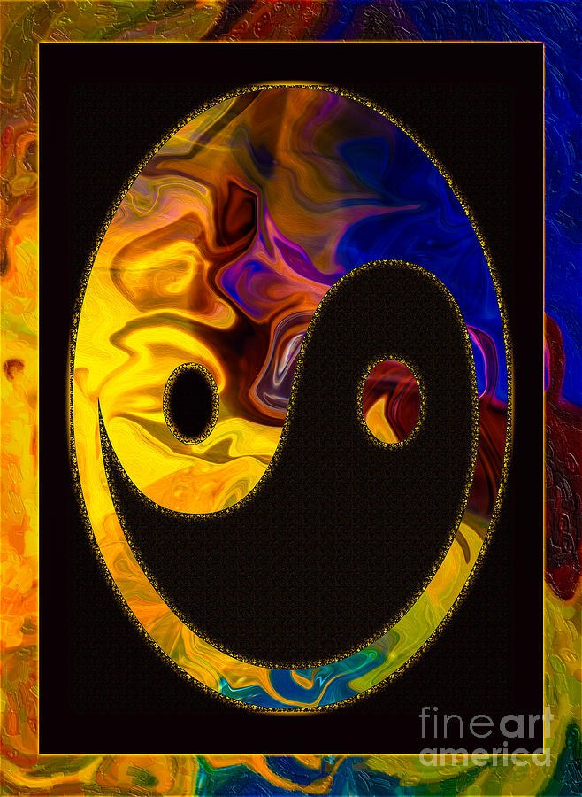
Yin Yang Window, Black Symbol Over Marbled Gold and BlueOther collections: Pacific Northwest Landscapes · Abstract Glass Macro · Contemporary Abstract & Mixed Media · Botanical & Flowers · Butterflies, Birds & Wildlife · Hawaii & the Kohala Coast · Rustic Architecture & Antiques · Black & White · Every piece